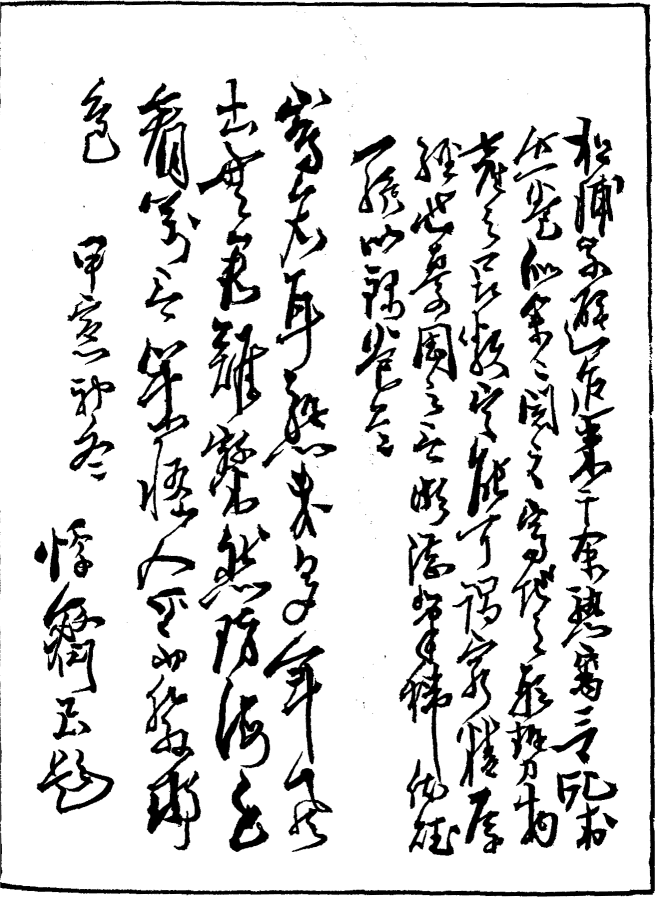
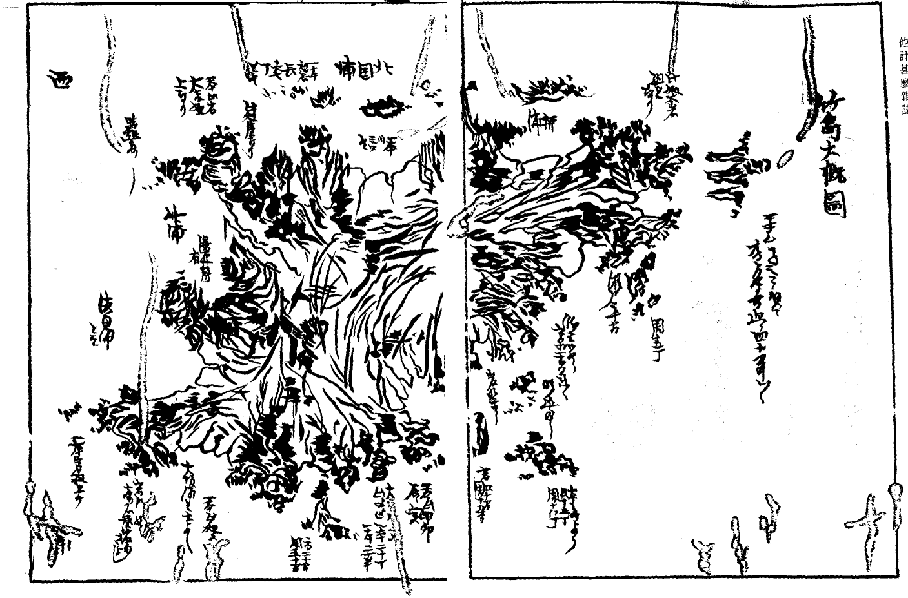
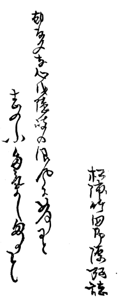
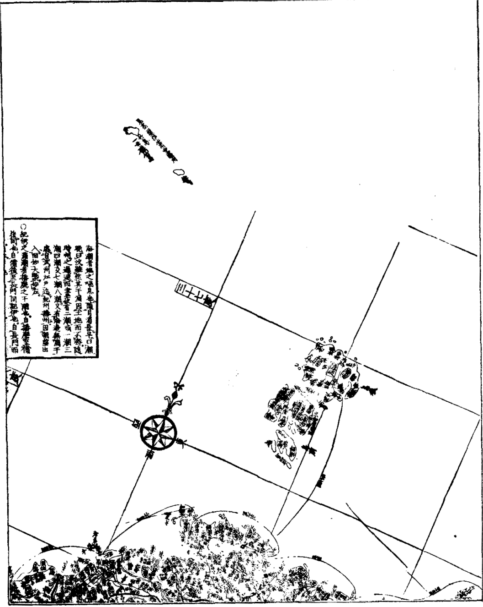

［＃改ページ］

［＃改ページ］
凡例
一 地理の肝要なる事、不肖今贅するに及ばず、皆しる處にして、頃年其事に識者心を盡さるゝ所の堅こう にし而 龍動 の繁昌、巴里斯 の美麗人々皆しらざる者なし。山海數萬里を隔（て）其地の盛衰動亂も月を越ずしてしる。豈是太平の餘澤ならず（や）。然るに其知ると知らざると竹島なる物未だ誰も是を説く人なし。また知る人も稀なり。去る癸丑の秋より籌海の書數十篇を見るに、蝦夷、樺太、續て伊豆七島、無人島に及ぶ物有れどもまた竹島に及ぶ類 を見ず。依而 此一卷を編輯して以て竹島雜誌と名を冠しむるもの也。
一 其編澄習といへども街説里譚を不レ用 。惣而引用の書に據て編す。其書の荒證に比すべき物は是我の杜撰 にあらざれば閲者見ゆるし給え。
一 雖レ然 其引用る處の事、もと漁夫獵人の話しを以て記したる物のみなれば、之杜撰は取べきなしといへども之陶金家の書せし北海隨筆も、後林子平氏三國通覽を著す原書となりしも同日の談なるべし。閲者敢て蔑視し給ふことなかれ。
明治三庚午の年後三日於二東京日比谷の馬角齋 一誌るす
松浦武四郎弘
［＃改ページ］引用書目
一 日本風土記一 日本輿地路程圖
一 現存六帖
一 懷中抄
一 東涯隨筆
一 草蘆雜談
一 金森建策筆記
一 宗對馬守義功家譜
一 隋書
一 大清一統圖
一 北史
一 伯耆民談
一 竹島圖説
一 太平年表
一 長兵衞竹島ばなし
［＃改ページ］
他計甚
 （日本風土記）また竹島と書は、此島（東の方大坂浦に有）に大竹籔有。其竹極めて大なるは周圍二尺斗なるものあり（竹島圖説）。よつて
（日本風土記）また竹島と書は、此島（東の方大坂浦に有）に大竹籔有。其竹極めて大なるは周圍二尺斗なるものあり（竹島圖説）。よつて
東涯隨筆に此島をして舳羅島等と云よし見えたれども、余按ずるに舳羅島と云ものは筑紫の沖に有る島をさして云り。九州邊にて瞽者どもいとだみたる聲にて※若 ［＃「魚＋（冢−冖）」、U+2B660、517-4］大臣の一代記といへるものを謠ひて市街を門づけして歩行有。其文句に舳羅島の事を多く乘せたり。然れども其前後の文句を考ふれば、舳羅島は壹岐か對島の事の樣に聞侍りけり。また東涯隨筆に周圍四十里とするに此竹島はさまではあるまじ。其大小の事は兎も角も彼大臣の比 にして、此島の事未だ如何なることか今の世にさえ明かならざるに、よもしれもせまじくまた人家もあらざるやう覺ゆ。因 に彼舳羅島の字の出ることと、其竹しまならざることとしらんが爲に爰に抄し置に、北史卷（九）十四倭傳、遺文林郎斐世清使國（倭國）度百濟行至竹島南望耽羅島〔國〕云々、等にて考ても此竹島は別なること明かなるべし。
竹島は日本を離ること遠くして漢土に近く、境内頗る廣治なる島也（伯耆民談）。隱岐の國松島の西島（松島の一小屬島也。土俗呼て次島と云。）より海上
朝鮮え渡海に釜山浦の湊其間十八里。夜に到れば彼國にて
然るに弘按ずるに左までは近かるまじきやに思ふ。十八（里）なれば何ぞ元祿年間まで朝鮮にて捨置こと有まじ。釜山浦は彼地の一大馬頭にして、皇邦 の浦賀、長崎の如し。其邊に如レ此一巨島ありたるとて何で是をしらではをるまじきに
また見二高麗一猶雲州望二隱州一（日本輿地路程圖）等出たり。また古歌に
（懷中抄） いにしへもかくやときゝし竹島の
ふしをへだてゝ今ぞさやなる
（現存六帖） 竹島やよするさゞ波いくかへり
つれなき世々をかけてこふらん
ふしをへだてゝ今ぞさやなる
（現存六帖） 竹島やよするさゞ波いくかへり
つれなき世々をかけてこふらん
弘此古歌を此處にしるし置とも、按ずるに此たけしまは近江なる湖中に有多氣島のことをよみしものか。よするさざ波の七文字にても湖邊のさま明らかなり。然れども其名の同じきまま因に抄擧し置ものなり。
其地形三角にして周圍凡十六り許。産物最多き一奇島なり（竹島圖説）。山嶽谿間あつて大竹、喬木繁茂し、諸島會〔禽〕獸多く元和二年迄國主なくして御料となり、然るに依て御上〔城〕代年々武都より來番して當城に
元和三年（丁巳）松平新太郎光政卿當國を管領して入部あるにより、兩人また願ふ處に光政卿軈て武都に告て許レ之され、爾來竹島え押渡（り）海漁をなす。其後毎歳渡海
是によつて此兩家
元祿五年（壬申）に渡海する所に唐人群居して海獵をなす。兩氏是を製〔制〕すといへども更に
竹島圖説に元和五年春二月十有一日、例年の如く米子を出帆して隱岐の國福うらに着し、同三月二十四日福浦を出帆して同月二十六日朝五ツ時、竹島の内イカ島と云處に着す。是時剏 めて異邦の人魚獵するを見るを得たり。蓋是より先いまだ曾て見ざるなり。翌二十七日我舟を同島の濱田浦へ廻さんとする皈路において、又異船貳艘を見たり。但一艘は居船にて一艘は浮べて異邦人三十人斗是に乘れり。我舟を八九間隔て大坂浦（へ）廻る其人員に屬する者か、一人陸に遺り居たるが忽ち小舟に乘じて我の近傍に來る。因て之を向〔問〕ふに朝鮮の「カツ テレ カハ ラ」の人民と答ふ。但此人は象胥 に似て能く我が國語に通ぜり。而蚫獵の故を詰 るに彼答に曰。原 より此島の蚫を獵するの意なし。然れども此島の以北に一島有て上好の蚫最多し。是故に吾 朝鮮國王の命を奉じて、三年毎に一回彼島に渡れり。當年も亦那邊に渡り海帆の跡難風に逢ひ、不レ計此島に漂着すと云に 後我輩曰、此竹島は昔時より日本人蚫獵を
朝鮮國王の命を奉じて、三年毎に一回彼島に渡れり。當年も亦那邊に渡り海帆の跡難風に逢ひ、不レ計此島に漂着すと云に 後我輩曰、此竹島は昔時より日本人蚫獵を做 れ〔し〕來れる處なれば速に出帆すべしと云ば、彼が答に、難風に遇ひ舟皆損破する故に之を補造して後去るべしと説けども、其實は急に退べきの状態にあらず。我輩の上陸して曾て築造せる小屋を檢査するに、獵船八艘を失へり。由て是を那 の象胥に質せば皆浦々へ廻はせりと答ふ。加レ之我舟を居〔据 〕へんと強れども彼れは衆、我は寡、衆寡固より敵すべからず恐懼の情なき事能はず。故を以三月二十一〔七〕日晩七ツ時、竹島より出帆せり。但串鮑、笠、頭巾、味噌麹一丸を携へ皈れり。此は這回の渡の證と做す〔さ〕んが爲のみ。四月朔日石州濱田へ皈り雲州をへて、同月五日七ツ時に伯州米子に皈着せり。（刊本 入。「按ずるに此元和とすることの元祿にはあらざるや。依てここに入るなり」）
入。「按ずるに此元和とすることの元祿にはあらざるや。依てここに入るなり」）
朝鮮國王の命を奉じて、三年毎に一回彼島に渡れり。當年も亦那邊に渡り海帆の跡難風に逢ひ、不レ計此島に漂着すと云に 後我輩曰、此竹島は昔時より日本人蚫獵を入。「按ずるに此元和とすることの元祿にはあらざるや。依てここに入るなり」）翌酉（元祿六年）の年渡海するに、唐人數多渡りて家居を設けて漁獵を恣す。于レ時兩氏計策をなして唐人兩人連歸りて米子に參着し、同年四月二十七日未の下刻灘町大谷九郎右衞門宅に入、斯て兩人島の趣、兩人の唐人召連歸帆の事を大守へ訴るに、遂に武都の沙汰に留るとかや（伯耆民談）。
竹島圖説。翌元祿六癸酉の年春二月下旬、再び米子を出帆して夏四月十七日未刻竹島に着せり。然るに昨年の如く朝鮮人等專ら漁獵をして我を妨げ、動もすれば不軌の語言を放つて和平ならず。止む事を得ず其中の長者一名と火伴 兩三輩を延ひて我船に入れ、同月十八日竹島より出帆して同二十八日米子へ皈れり。其由を國侯松平伯耆守へ訴ふ。國侯亦之を御勘定奉行松平美濃守殿へ奉上申られ、因て台命を下して那の一夥の人員を江都に召れ審に諸件を正され給ひ、時に日本人は朝鮮人との渡海は時候を異にせるにはあらずやと尋ねられしかば、右の一夥の答に、我等は毎歳春三月の比 渡島し、七月上旬皈帆の節獵舟獵具等を小屋に納め置、翌年渡島の節まで毫も差違なかりしに、去年元祿五年より小屋を發 き肆 ままに器械を奪ひ、倨然として居住するの模樣に見れば、全く此年朝鮮人創めて竹島を搜索したるに疑なしといへり。尚且之に依て魚獵難レ爲之由屡愁訴に及べりと云に
同年大谷、村川連來る彼二人の唐人等米子より國府城下に到。時に加納郷左衞門、尾關忠兵衞兩士領主の
元祿九（丙子）年正月二十八日（伯耆民談）
憲廟の御時なるが、朝鮮より竹島は朝鮮の島のよしを申上ければ、竹島を朝鮮えあたえ給ふとかや（草蘆雜誌）。かくて御月番（正月二十八日也。）御老中戸田山城守殿奉書を下され候よしなり（竹島圖説）。
先年松平新太郎因伯兩州領知之節相窺之伯州米子町人村川新兵衞大谷甚吉至レ今入二竹島一にて爲二漁獵一向後入島之義制禁可二申付一旨被二仰出一可レ存二其趣一 恐惶謹言
元祿九年子正月二十八日
土屋相模守
戸田山城守
阿部豐後守
大久保加賀守
戸田山城守
阿部豐後守
大久保加賀守
松平伯耆守殿
宗對馬守義功より出たる家譜に
元祿九年因幡國與 朝鮮國與 之間竹嶋與 唱 候嶋有レ之、此島兩國入合 之如く相成居不レ宜 候に付、朝鮮之人此邊え參候事を被レ禁候段從
公儀被二仰出一、其段朝鮮國禮曹參判江家老使者前々年より再度差渡候處、論談及二入組一候も今年正月二十八日義眞國え御暇被二成下一候節、右竹島江日本人相渡候儀無益との事に候間被二差留一候段、領主被二仰渡一候由義眞□〔江〕被二渡海一候ニ付、義眞歸國之上同年十月朝鮮之譯官使對話仕候刻 、右被二仰出一之次第傳達爰に致り論談相濟ル
公儀被二仰出一、其段朝鮮國禮曹參判江家老使者前々年より再度差渡候處、論談及二入組一候も今年正月二十八日義眞國え御暇被二成下一候節、右竹島江日本人相渡候儀無益との事に候間被二差留一候段、領主被二仰渡一候由義眞□〔江〕被二渡海一候ニ付、義眞歸國之上同年十月朝鮮之譯官使對話仕候
尚此餘さまざま御沙汰書世にさまざま有べけれども見る事をゑせざるまましるし置かず。又此二通は不思議にも其寫しを得しまま、此處に抄擧して考證とすべきもの也。
さて其より三年を過て十一年（元祿）
然るに其後二十七年を過て
享保九（甲辰）の年、江府より因州家え台問有て、但し米子は荒尾但馬の食邑なれば、同氏え令して之を正さしめられしとかや。然るに其時彼家より此兩商の呈する處の書を謄寫して、大夫池田豐後より官え呈せしとかや。
扨其島伯州會見郡濱野曰三柳村より隱岐の後島え三十五六里あり。此遠見の考を以て朝鮮の山を見れば凡四十里と思わる。（金森建策筆記。併同人の考に此山といへるは朝鮮の欝陵山なるか。此筆記とするもの享保年間屡渡海する一老漁叟に聞しなるもののよしなり。弘再按ずるに、其漁叟と云もの石州濱田の漁夫長兵衞といへるもの哉。遊暦〔歴〕の時此近國にて好事の家にておりおり筆記するものまたは旅泊の亭主等に聞に多くは此濱田の長兵衞のことを談じたり。故に其形勢多くは此長兵衞の傳えしことを以てしるすなり。長兵衞後備前に到り小原町といへるにて死す。金森建策の筆記多くは是に據ならん。）
其地東西凡三り半。四里には
濱田浦と云（按ずるに此邊石州と對峙するが故に、濱田邊より漁者多く此處をさして乘來りしにて此名有るやと思はる。此濱砂濱にして小石まざり流れ二ツ有。其川□〔源〕は山中の瀑布より出で東方の大河二流を合て、大小三岐にわかれ其二すじは此處に來り、一すじは東濱に落るよし。此川また年魚（あゆ）を生ずること最も多しと。）。また西なる一ツの岬を廻りて（大岩組上也。）
 有（此岩燕の内石燕多しと。）。また
有（此岩燕の内石燕多しと。）。また瀑布有（岩崖に懸り高凡三十丈。） 少しの岩岬を廻り（此邊り皆絶壁なり。）西へ出、竹の浦といへるに到る（此處濱形未向。砂濱平地十五丁斗なり。其中程に一すじの流れ有。此處に船を繋ぐに［＃「繋ぐに」は底本では「繁ぐに」］よろしと。然れども南風劇き地にして甚難所なりと船澗と云にもあらざるよし。此邊り山中尤巨竹多し。依て號るやと思わるなり。）。また西の方
一ツの大岩岬有（此處西の端なり。岬燕尾に分れて海中に突出す。何れも大岩組上なるよし。）此處を廻り少し北の面に廻りて（此邊都て岩壁也。）
大岩磯に出る（澗形をなしたり。其澗内峨々たる岩壁にして其高十丈餘有。一説に此上に貳百疊も敷るる岩※［＃「山／眉」の「目」に代えて「出」、525-3］有といへり。海内實に無双のものならん。中に石燕多きよし。石州雲州邊にて此島を穴島といへり。また少しに）岩岬を廻りて（岩の組上なり。）砂濱に出る（此處また濱形六七十有。戌の方に向ふ。前に少しの）嶋有（此島岩斗にして凡廻り三丁斗なり。また此濱に小流れ有。然し此流西の方にては大〔第〕一とす。）。また一ツの岬（小きよし。） を廻り海中に一ツの島有（樹木なし。周凡五六丁と聞り。）また并て一ツ有よし（此島西浦一の大島とす。凡十五六丁も周り有らん哉に聞。周り皆岩にして其邊り暗礁多し。）つゞきて大岩岬（此岩高凡百間といへり。海中に突出するよし。）廻りて
北國浦といへるに出る（濱形亥の方に向ふ。左右大岩岬。其間凡十五丁斗。砂濱なり。是に三ツの流れ有。何れも川源は嶋中の山にして瀑布有るよし。是より來ると聞り。其瀑布の邊り實に風景目ざましき勝景なる有と。）。
小島一ツまた有（北國浦の向ふなり。此瀬戸を）越てまた大岩岬（嶮嵯九十丈と聞り。） 廻りて（少し北に廻りて）
柳の浦といへるに出る（此處また左右に大岩岬有て一ツの澗となる。澗内砂濱十丁斗。平地にして川□有。此邊に芦荻多きよし也。此處の岬より少し高き地へ上れば朝鮮の山よく見ゆるよし。朝鮮人は此處をさして乘來るよし也。）。
また此處に（柳の浦の向ふなり。） 一ツの島有（此島屬島中の大なるもの也。凡廻り二十丁も有るべし。周り皆岩壁なり。また少し北へ廻り）。
一大岬を過（此岬大岩組にして海中に突出す。北のはし也。）東へ廻り少しの濱有（平地にして谷川一つ。凡此間六七丁といへり。荻芦多し。左右大岩岬也。）また前に
三本柱といへる島有（此岩の高百五十間にして周り四十間斗と云。其二ツは上に松の樹生たり。一説此しま皆離れたりとも云。また根は一つにして三ツに分れたりとも云り。此邊り之土人此話をする時は實に不思議の樣に説り。）少しの岩岬をまた廻る（此岬岩の組上なり。）一ツの岩島（此岬と島との間三十間斗といへり。島は岩にして樹木なし。越て）。砂濱に出る（小流れ有。并て）大岩壁に
瀑布三ツ有（何れも高五十間といへり。何れも海中に落るよし。）また并て岩岬三ツ有。此處（何れも小さきよし。）を廻りて（此邊東浦なり。）
小石濱（凡貳十丁有。）に出る。此邊り岩島暗礁多し（濱形卯辰に向ふなり。小流れ此處に五ツ有。また前に）嶋有（高五十間。周十五六間と云り。其上に松の木有て廻り暗礁多きよし也。）。また少し隔てゝ海中に島有（此周貳十丁。上に樹木多きよし。周皆岩壁にして船よせがたしと。并て南の方）小岩岬を廻り（少しの濱に出るなり。）此邊り陸の方平山にして樹木多く、竹また多しと聞り。また一ツの岩岬を廻り（此處辰に向なり。）澗有（此澗奧行貳丁斗と云。一説二十丁といへり。此濱巳の方に向ふよし。川一つ有よし。前にまた）島有（高サ二十間周りに暗礁多し。其周り凡一町半といへり。上に松の木有。弘按ずるに、高（さ）よりは何れも周りが間少なるは如何なることやらん。其二十間、五十間は凡のつもりにしてよもさまではあるまじきものをや。然れども余は聞ままをしるし置り。）。また一ツの岩岬を廻りて彼大坂浦に來ると聞り（此間のこと皆我が日記中彼邊にて聞しをもてしるし置り。）。
惣而此島中峻嶺多く樹木繁茂、又瀑布處々有。東に當る處には一ツの奇泉有るよし。其水清く味甘美也。一日に漸一升許り涌出す（伯耆民談）。（竹島圖説。此島に甘露の瀧有。異るまた井泉ある事を沙汰す。然れども未だ其實を糺さず。故に爰に□り云々。）。實に是無比の奇島なり。
亦鮑極めて大く是を串鮑にして産物とす。凡日本普く賞翫す。所謂鮑を得ること多きが故に、岸沚の竹を燒て海中に沈置、朝に
此島に生ずる猫
鼠


海鱸（此魚肥前、平戸、五島邊の海に「マレブイ」と云ふもの此魚の類ならん。其大さ小犬の如し。面は鐵魚（ナマヅ）の如く極めて多脂なり。色白く質は蝋にして□□。是を獵せば釜中に入れ水を加えて煮る時は、油氣沸騰して上面に浮ぶ。之を取り更に水を加えて煮る時は復た始の如し。また幾度も盡る時なし。是を以て若し漁人煮せば大に油代を得るの利ある故好て獵せんとす。此魚風波無時礁上に眠り醒ざる事あり。其時其風下より廻りて括槍にて刺す也。）
人蔘（葉蘿葡〔蔔〕の如し。「ノコキレ」細く壓花の如く、色黄にして味甘辛なりと云。）
辰砂 岩
嘉永七甲寅神無月上浣於二武江※［＃「糸＋爾」、U+4324、529-4］〔繍〕眼兒 臺藤田氏之墨香塾一勢州雲出之迂生
松浦竹四郎源弘誌
早々
［＃改ページ］
